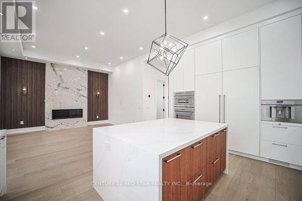

1 Frankwood Road


Price: $2,799,000
Address: 1 Frankwood Road, Toronto
Size: 2500 - 3000 sqft
Rooms: 6 bds , 7 bths
Description: Welcome to 1 Frankwood Rd, completed late 2024- a brand new custom modern luxury home redefining elegant living in South Etobicokes most coveted setting, steps from Royal York & The Queensway. With over 3,900 sq. ft. on a premium 42' x 100' lot, this residence impresses with soaring ceilings (12' main, 9' upper, 9.5' lower), expansive glazing, and seamless open living anchored by a gas fireplace.The chefs kitchen boasts custom cabinetry, quartz counters & backsplash, oversized island, and Thermador built-ins including a coffee system and bar-fridge, plus walkout to a covered glass-railed patio. Upstairs: four ensuite bedrooms with custom closets, a glass-door office, and balconies front and back. The primary suite offers a walk-in, spa-inspired 6-piece bath, and sunrise views. The legal 2-bedroom lower suite features a private entrance, quartz kitchen, smart stainless appliances, in-suite laundry, and oversized windows ideal for family, guests, or staff quarters. Smart luxury throughout: heated, self-cleaning, touch-free spa-style toilets in every bath, hardwired data ports, app/voice lighting, motorized blinds, smart locks, video doorbells, Wi-Fi garage opener, two Level-2 EV chargers, central vac, BBQ line, and hot-tub-ready pad. Lifestyle perfection: walk to top-rated schools, parks, TTC, and minutes to Gardiner/QEW, Royal York & Islington stations, Mimico GO (15 min to Union). Shopping at IKEA, Costco, Home Depot, and RONA just around the corner. 1 Frankwood Rd is where design, technology, and convenience converge. More than a home its a statement.